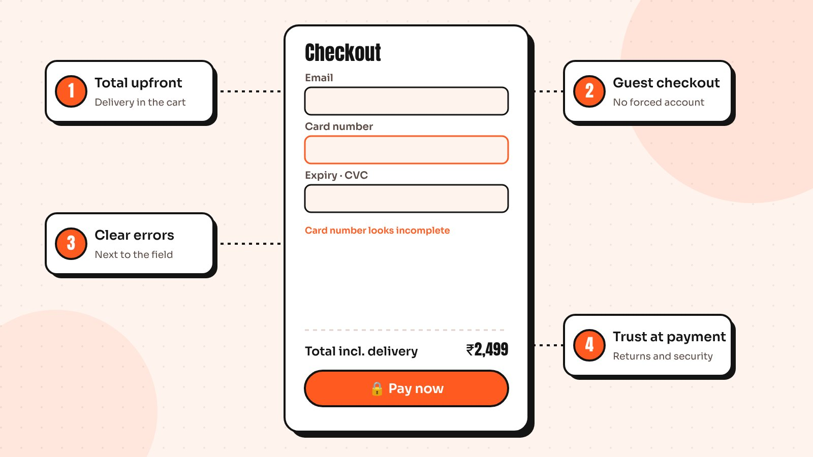
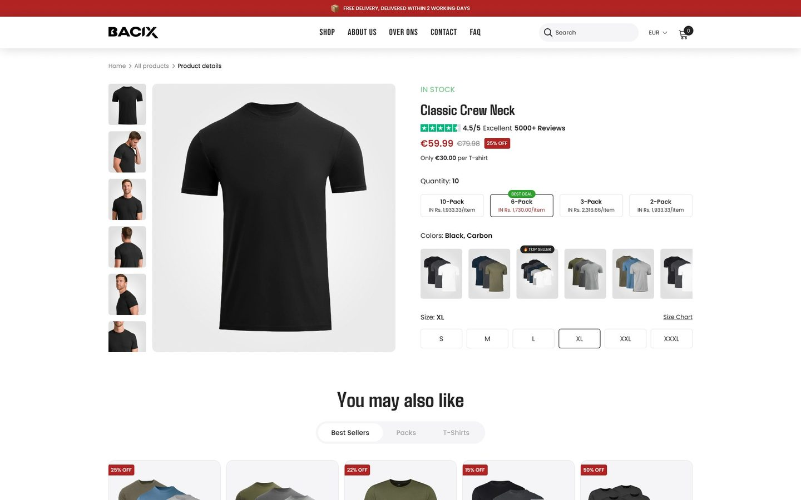

4 Small Checkout Details That Cost You Sales
Shoppers who reach checkout already want to buy. These four small details are often what stops them and each one is quick to fix.

Getting someone to checkout is the hard part. They found your store, chose a product and decided to buy. Losing them now hurts more than losing a casual browser. Yet Baymard Institute’s research puts the average cart abandonment rate at around 70%.
Some of that is normal. People compare prices and save items for later. But a lot of it comes from small, fixable details in the checkout itself. These are the four I find most often when I review e-commerce stores.

1. Costs that appear too late
Nothing kills momentum like a surprise. A shopper sees a price, decides it’s fair, then finds shipping, taxes or fees added on the last step. Many leave right there, not because the total is too high, but because they feel misled.
- Show the shipping cost or a free shipping threshold on the product page
- Include an estimated total in the cart, not just the subtotal
- Show the delivery date, not only the delivery method
2. Forcing people to create an account
Asking for a password before someone can pay adds friction and feels like a commitment they didn’t sign up for. Offer guest checkout clearly and invite people to create an account after the order is placed, when all you need is a password because you already have their details.
3. Form errors that are hard to fix
Long forms are tiring, but confusing errors are worse. A message at the top of the page saying “Please correct the errors below” leaves shoppers hunting for what went wrong. Then the card number field clears itself and they have to start again.
- Validate fields as people go, not only on submit
- Show the error next to the field, in plain language
- Keep everything the shopper typed, including card details where possible
- Use the right keyboard on mobile, such as numbers for card and phone fields
Baymard’s checkout usability research documents dozens of guidelines like these and form errors come up again and again.
4. Missing reassurance at the moment of payment
Paying is a moment of doubt, especially with a store someone hasn’t bought from before. Small signals help a lot: visible return and refund terms, secure payment notes near the card field, recognisable payment logos and a support contact.
Keep these close to the pay button, where the doubt happens. A return policy hidden in the footer doesn’t help at the moment of decision.

How to find your leaks
Before changing anything, find where people leave:
- Check your checkout funnel in analytics, step by step
- Watch session recordings of shoppers who abandoned
- Place a real order on your own store using a phone
- Ask a friend to buy something while you watch, without helping
You’ll usually spot at least one of these four issues within minutes. Fix the biggest leak first, measure the result, then move to the next.
For the rest of the store, read 7 signs your Shopify store needs a redesign or take a look at how I designed the shopping flows for Halcyon and Nova.
Send me your screens and I’ll show you where users drop off and what to fix first.
Quick answers
What causes cart abandonment at checkout?
Common causes include extra costs shown too late, forced account creation, long or confusing forms, unclear error messages, slow loading and a lack of trust signals near the payment step.
Should my online store offer guest checkout?
Yes. Guest checkout removes friction for first-time buyers. You can invite shoppers to create an account after the order, when you already have their details.
How can I reduce checkout abandonment on mobile?
Offer express payment buttons, use the right mobile keyboards, keep forms short, validate fields inline and make the total and delivery date clear before the final step.